500
тонн сахара в сутки
76 000
гектаров земли
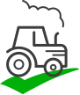
350 единиц
сельскохозяйственной техники
1 000
профессиональных сотрудников
Продукция
Продукция Карачаево-Черкесского сахарного завода
Вся продукция сахарного завода производится по российским и европейским стандартам качества и пользуется большим спросом по всей стране.
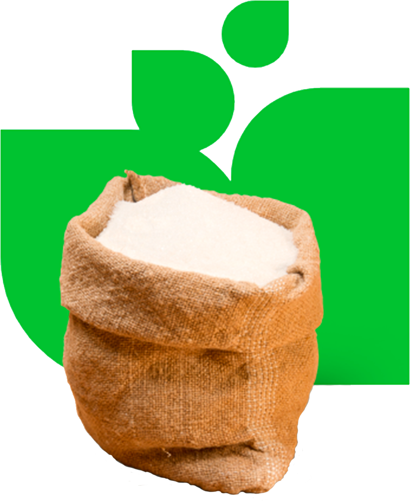
Новости
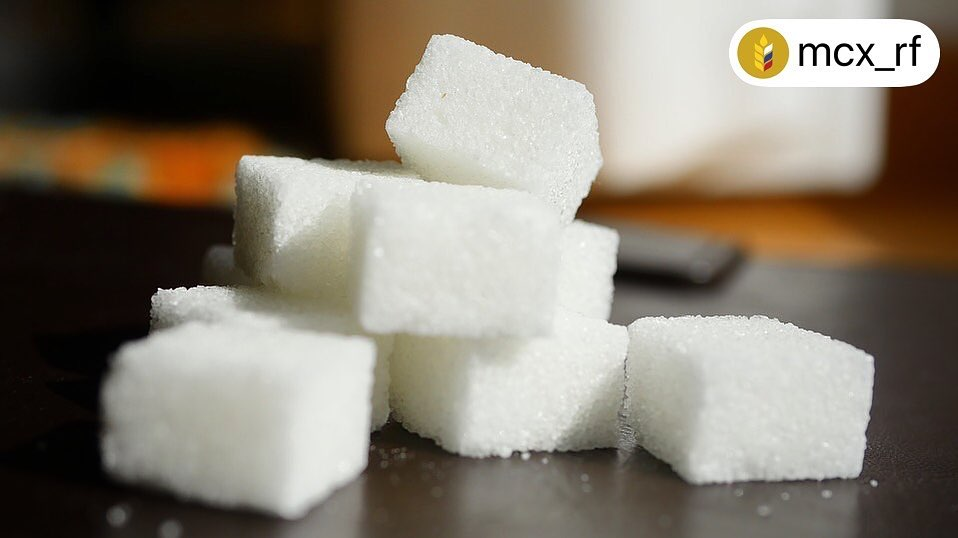
24.03.2020 г.
По данным Союзроссахара, в сезоне 2019/20 гг.
произведено 7,55 млн тонн свекловичного сахара,
что превышает потребление на 1,7 млн тонн.
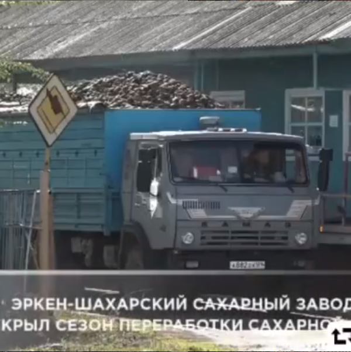
07.10.2019 г.
Экрен-Шахарский сахарный завод открыл новый сезон приема
и переработки сахарной свеклы. Всё лето предприятие готовилось
к этому событию, проверяя и налаживая оборудование.
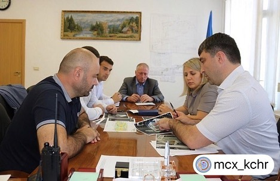
076.09.2019 г.
Вопросы, касающиеся участия Эркен-Шахарского сахарного завода в
российской агропромышленной выставке «Золотая осень», обсудили
сегодня Министр сельского хозяйства КЧР Анзор Боташев и Председатель
совета директоров завода Рамазан Бердиев.
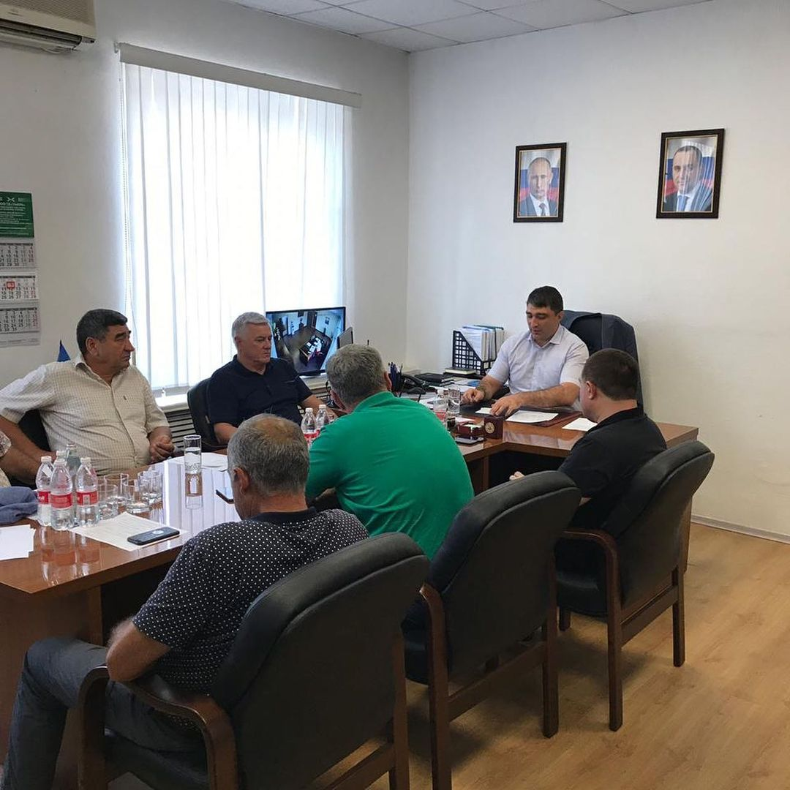
06.09.2019 г.
Сегодня под председательством министра сх КЧР Боташева А.А.
провели рабочее совещание на тему готовности сахарного завода
к приемке и переработке сахарной свёклы урожая 2019 года.
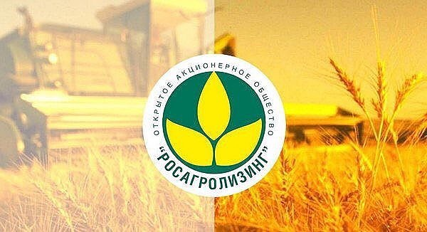
24.08.2019 г.
Программа обновления парка техники 2.0. сохранила все уникальные
льготные условия приобретения предметов лизинга для сельхозпроизводителей.
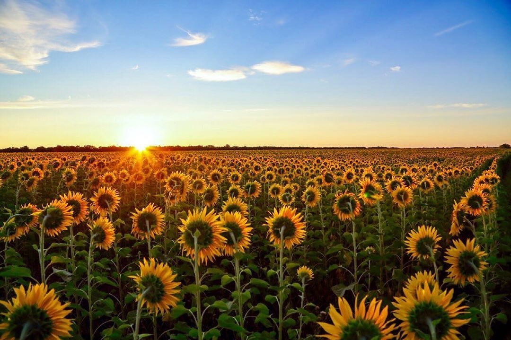
21.08.2019 г.
Меньше двух недель осталось до окончания приема заявок на участие
в VI ежегодном Всероссийском конкурсе информационных проектов
«Моя земля – Россия», организованном Минсельхозом.
Закупки
Тендерный комитет в целях обеспечения максимальной эффективности
закупок ООО "КЧ сахарный завод" использует систему конкурентных процедур
и коллегиальный способ принятия решений о выборе наилучших условий
приобретения товаров, работ и услуг.
Мы надеемся на взаимовыгодное сотрудничество и приглашаем организации принять участие в тендерах на поставку товаров, выполнение работ, оказание услуг Холдингу. Мы также готовы рассмотреть коммерческие предложения на поставку товаров (работ, услуг).
Мы надеемся на взаимовыгодное сотрудничество и приглашаем организации принять участие в тендерах на поставку товаров, выполнение работ, оказание услуг Холдингу. Мы также готовы рассмотреть коммерческие предложения на поставку товаров (работ, услуг).
Ваши предложения, включающие краткую информацию о компании, предлагаемых
товарах (работах, услугах), ценах и системах скидок, а также реквизиты
(включая телефон, адрес электронной почты, контактное лицо) направляйте
по адресу:
info@sugar.cherkessk.raz.ru
info@sugar.cherkessk.raz.ru
Фотогалерея
Уборка сахарной свёклы
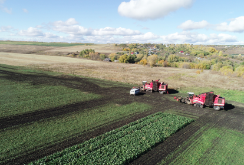
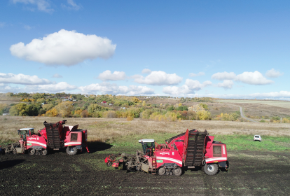
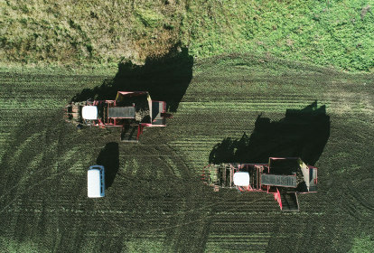
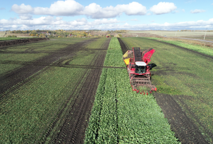
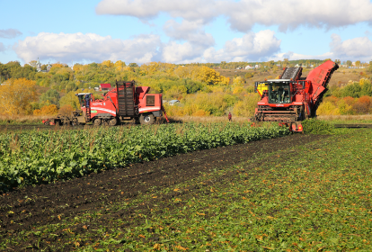
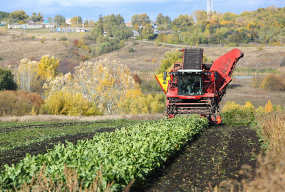
О компании
Строительство сахарного завода началось в 1959 году. Основанием для
строительства стало постановление Совета Министров РСФСР от 21 марта
1959 года № 452. Выбор площадки для строительства сахарного завода был
произведен в 1959 году Комиссией с участием Государственного проектного
института «Гипросахар», Ставропольского крайисполкома, бывшего Совнархоза
и других организаций. Для строительства завода было выбрано идеальное
место — междуречье рек Кубань и Малый Зеленчук. Тем самым был решен один
из главнейших вопросов технологии производства сахара — вопрос водоснабжения.
Выбор именно этого места также позволил решить и некоторые другие вопросы
сельского хозяйства района. А именно: многие сельскохозяйственные предприятия,
например колхоз Имени Кирова, совхоз «Эркен-Юртский», колхоз Имени Ленина, колхоз
Имени «40 лет Октября» и другие, расширили посевные площади и стали выращивать
сахарную свеклу. Наличие железнодорожной ветки между Черкесском и Невинномысском,
позволяло производителям сахарной свеклы Краснодарского и Ставропольского краев,
соседних автономных республик и областей поставлять выращенный урожай на переработку
в кратчайшие сроки. При выборе места также учитывались и метеоклиматические и
географические условия: преобладающее направление ветра, холмиста местность и прочие.
СТРОКИ ИСТОРИИ
1964 год-завершено строительство завода 1980-1982 годы — проведена реконструкция завода, увеличены производственные мощности 1993 год — совместно с Краснодарским НПО «Сахар» смонтирована технологическая схема по переработке сахара-сырца 2000 год — завод вошел в состав Сахарной компании «Разгуляй» 2002 год — введена в эксплуатацию автоматизированная система приемки сахарной свеклы
ПРОИЗВОДСТВЕННЫЕ МОЩНОСТИ
Завод имеет возможность переработать в сутки: свыше 5 000 тонн свеклы; 800 тонн сахара-сырца.
Завод единовременно может хранить: 30 000 тонн сахара-песка в трех силосных башнях; 5 000 тонн сахара в мешках; 7 200 тонн патоки в металлических баках; 80 000 м3 сырого жома в наземных жомохранилищах.
ГОДОВОЙ ОБЪЕМ ПРОИЗВОДСТВА
Сахар-песок — более 60 000 тонн. Жом сырой — 14 000 тонн. Жом сухой, брикетированный — 330 тонн. Меласса — 10 000 тонн. Известь товарная — около 700 тонн.
В сезоне 2001-2002 годов на заводе была введена автоматизированная система приемки свеклы, которая позволила снизить потери до 3%, что составляет более 6 000 тонн свеклы в год.
ОАО «Карачаево-Черкесский сахарный завод» — одно из крупнейших предприятий отрасли в России. Успешная производственная деятельность способствует повышению жизненного уровня работников завода. Ему принадлежит 38% от объема потребительских товаров, выпускаемых в республике. Завод входит в тройку крупнейших предприятий региона, пополняющих его бюджет.
Наш адрес
СТРОКИ ИСТОРИИ
1964 год-завершено строительство завода 1980-1982 годы — проведена реконструкция завода, увеличены производственные мощности 1993 год — совместно с Краснодарским НПО «Сахар» смонтирована технологическая схема по переработке сахара-сырца 2000 год — завод вошел в состав Сахарной компании «Разгуляй» 2002 год — введена в эксплуатацию автоматизированная система приемки сахарной свеклы
ПРОИЗВОДСТВЕННЫЕ МОЩНОСТИ
Завод имеет возможность переработать в сутки: свыше 5 000 тонн свеклы; 800 тонн сахара-сырца.
Завод единовременно может хранить: 30 000 тонн сахара-песка в трех силосных башнях; 5 000 тонн сахара в мешках; 7 200 тонн патоки в металлических баках; 80 000 м3 сырого жома в наземных жомохранилищах.
ГОДОВОЙ ОБЪЕМ ПРОИЗВОДСТВА
Сахар-песок — более 60 000 тонн. Жом сырой — 14 000 тонн. Жом сухой, брикетированный — 330 тонн. Меласса — 10 000 тонн. Известь товарная — около 700 тонн.
В сезоне 2001-2002 годов на заводе была введена автоматизированная система приемки свеклы, которая позволила снизить потери до 3%, что составляет более 6 000 тонн свеклы в год.
ОАО «Карачаево-Черкесский сахарный завод» — одно из крупнейших предприятий отрасли в России. Успешная производственная деятельность способствует повышению жизненного уровня работников завода. Ему принадлежит 38% от объема потребительских товаров, выпускаемых в республике. Завод входит в тройку крупнейших предприятий региона, пополняющих его бюджет.
Обратная связь